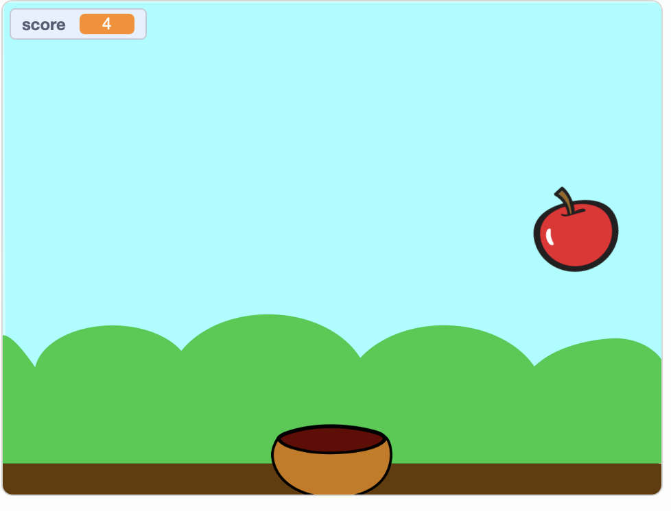
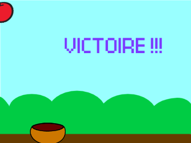

Ce projet destiné à des élèves de 9ème en fin de premier semestre mobilise une partie des bases de l'algorithmique : instruction, séquence d'instruction, répétition, variable, évènement. Le projet a été organisé sur 5 périodes de 45mn.
Le projet a été réalisé avec une classe de 9VG1 (6 périodes de 45mn) et de 9VP (5 périodes de 45mn).
|  |  |
| Classe de 9VG1 | Classe de 9VP |